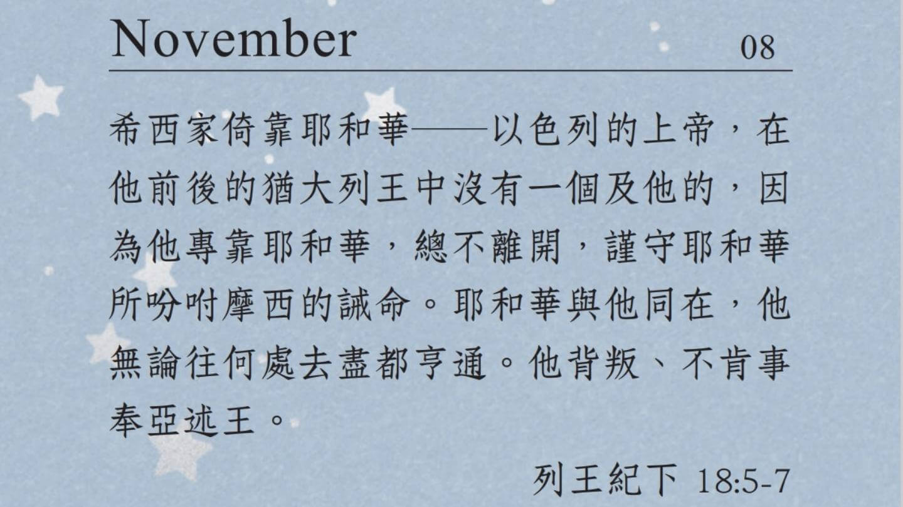
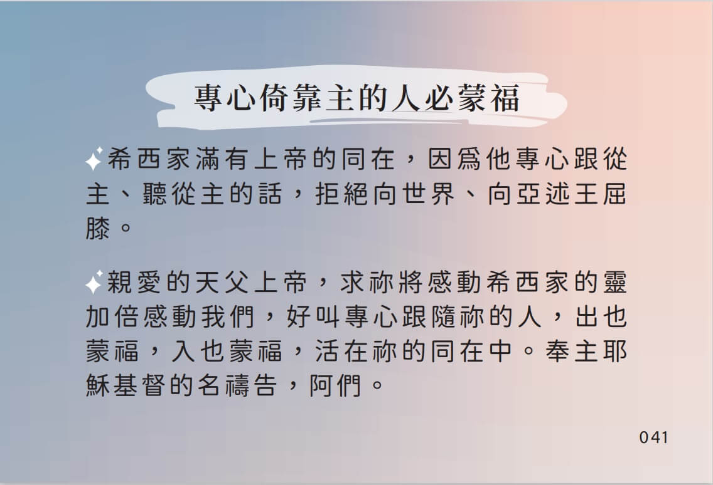

先领受今天的话语，再走进今天活泼的生命 · QT
今天的内容还没更新，下面显示的是 2026年11月8日 的话语。
仅有极少数存留
2026年11月8日星期日
阿摩司书3：9～15
经文引自《中文英王钦定本》 · ckjv.asia · CC BY-SA 3.0
默想与祷文译自 Duranno · Living Life（英文 QT） · · 中文由本站翻译
资料更新于 2026年11月8日 20:32（台北时间） · 资料来源：CGN Chinese · 活潑的生命（YouTube）


每天两张卡片原图：上面是当日经文，下面是默想与祷告。原图取自 RPG 復興禱告總動員「每日經文」（365 復興禱告卡），只显示原图、不作转载，版权归原作者所有。